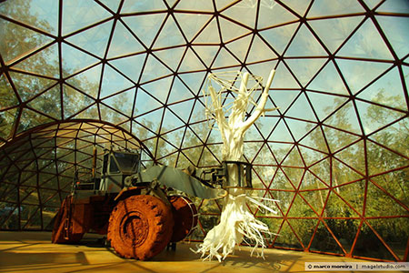
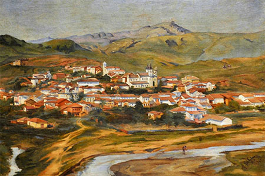
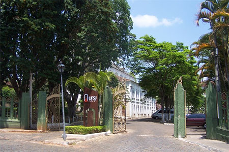
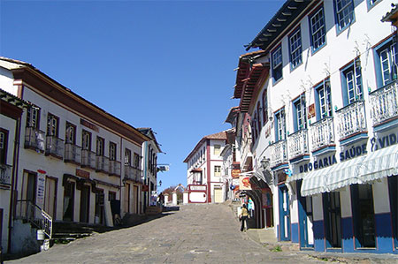

Sorroundings
Inhotim: http://www.inhotim.org.br/
The Inhotim Institute is home to one of the most important contemporary art collections in Brazil and is regarded as the greatest outdoor art complex in the world. Inhotim is located in the town of Brumadinho, MG only 60 km away from Belo Horizonte.


Serra do Cipó: http://www.circuitoserradocipo.org.br/
Discovered during the Brazilian pioneer era, the Serra do Cipó Mountain Range played an important role in regional history and is also internationally famous for its biodiversity as well as being home to many endangered species. The Serra do Cipó National Park and surrounding area is home to many waterfalls, hiking routes, camping grounds, and rural hotel retreats. The region is an must visit for any nature lover.


Historical City Circuit: Ouro Preto, Mariana, Congonhas do Campo, Sabará, Tiradentes, São João Del Rei, and Diamantina
Minas Gerais is home to many culturally and historically important cities dating back from the Portuguese colonial era. Today, many of these cities and their buildings are recognized for their cultural, historical, and architectural contributions and importance to humanity by organizations such as UNESCO and IPHAN. The majority are within visiting distance from Belo Horizonte.
For more information on the cities in the Historical Circuit and other nearby heritage sites, please visit: http://www.belo2014.com/en/proximo-a-belo-horizonte/
Many of these cities are located along the historic Estrada Real, the colonial trade route which shaped the development of colonial era Minas Gerais and Brazil. For more information on the Estrada Real, please visit: http://www.institutoestradareal.com.br/
Ouro Preto
Listed as a UNESCO World Heritage Site, the colonial city and former state capital Ouro Preto is a preserved masterpiece of Brazilian baroque architecture. In the city’s preserved churches and museums, visitors can see many of the masterpieces of the famed sculptor Aleijadihno and painter Mestre Ataíde. (99 km from BH). http://www.ouropreto.org.br/


Mariana
The first village, diocese, and capital of Minas Gerais, Mariana was also the first and only city during the colonial period built along a designed street plan. Along with neighboring Ouro Preto, Mariana features extensively preserved Brazilian baroque architecture dating back from the region’s gold rush era. (110 km from BH). http://www.mariana.org.br/


Congonhas do Campo
Congonhas do Campos, situated not far from Ouro Preto and Mariana, is home to the famed Sanctuary of Bom Jesus de Matosinhos, and was registered as a UNESCO World Heritage Site in 1985. The Sanctuary is home to the Magnum Opus of Aleijadihno, “The Twelve Prophets”. (83 km from BH) http://www.congonhas.org.br/


Sabará
The historic town of Sabará neighboring Belo Horizonte, features a beautiful historic center featuring preserved Brazilian baroque architecture. Seven baroque churches are located in Sabará’s historic town center all dating from the 1700s. Renowned French art historian Germain Bazin proclaimed that the church of Nossa Senhora de Ó, is “one of the finest creations of baroque art.” (19 km from BH). http://www.sabara.org.br/port/passeios.asp


Tiradentes
Tiradentes is a mixture of flavors of Minas Gerais: history, culture, religion, nature and cuisine. The city hosts many important architectural examples of the Brazilian baroque era, and some of the city’s main buildings include sculptural work by the famed Aleijadinho. The city was registered as a national historic landmark in 1938 by the Institute of National Historical and Artistic Heritage, IPHAN. (194 km from BH). http://www.tiradentesgerais.com.br/


São João Del Rei
São João Del Rei was established on the Estrada Real, a main transport route between the gold mines in Minas Gerais to the ports in Rio de Janeiro. São João Del Rei features many important architectural examples of the Brazilian baroque era and city was registered as a national historic landmark by the Institute of National Historical and Artistic Heritage, IPHAN. The city is also the birth place of important Brazilian historical figures: Tiradentes, Tancredo Neves, Otto Lara Resende, Francisca Paula de Jesus. (186 km from BH). http://www.guiadelrei.com.br/site/


Diamantina
Diamantina was a center of diamond mining for the Portuguese crown in the 1700s and 1800s and the immense wealth from this period is exhibited in the city’s well preserved and immense examples of Brazilian baroque architecture. Located in the Serra do Espinhaço mountain range and one of the most visited historical cities in Brazil, Diamantina is registered as a UNESCO World Heritage Site. Diamantina can be reach from Belo Horizonte by federal highway BR-259 or by regular flights between Belo Horizonte’s Pampulha Airport and Diamantina Airport. (292 km from BH). http://www.diamantina.mg.gov.br/

